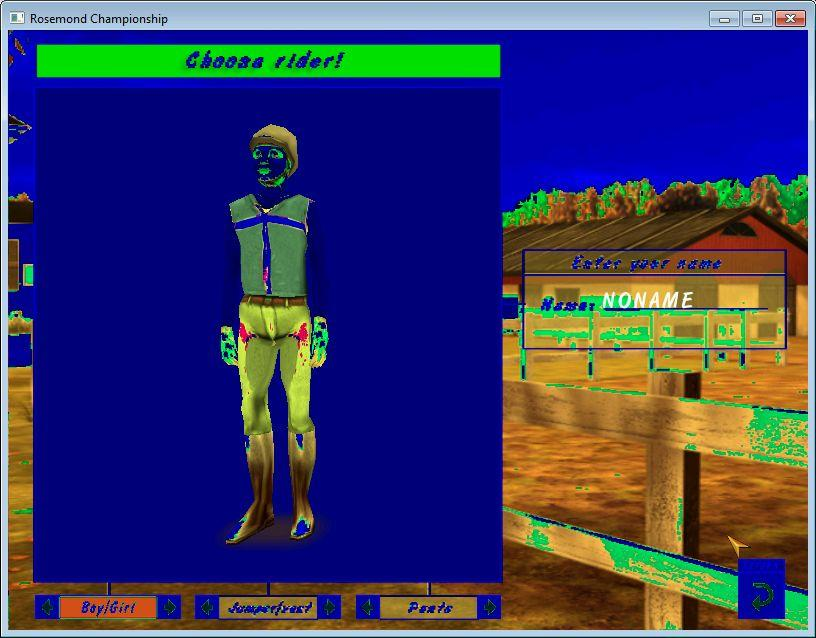
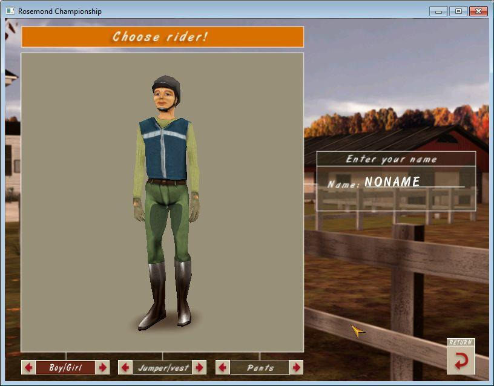

The images below shows images from "Competitions at Rosemond Hill" rider selection. The first image shows the artifacts appearing with some nVidia video cards due to the selection of a incorrect bump-mapping texture format instead of a proper RGB format. The second image shows the same panel fixed using the "Filter RGB textures" flag.

